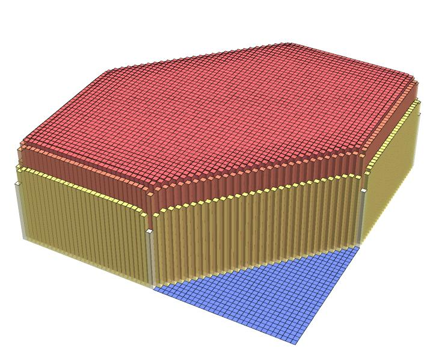
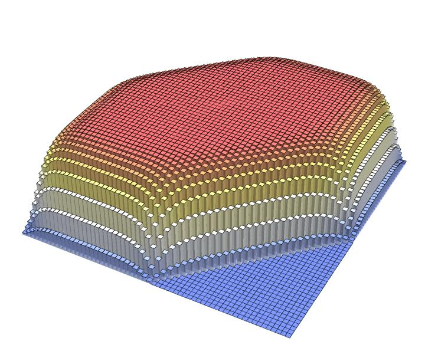
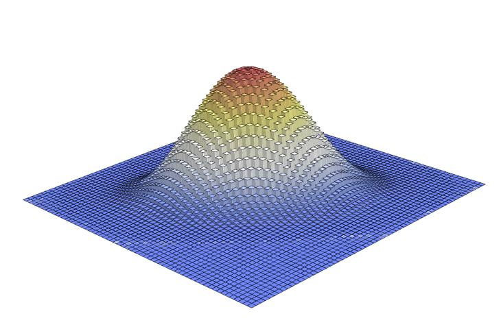

\(q = 0.2\)

\(q = 0.6\)

\(q = 0.9\)
\((x;q)_d = \prod_{i=1}^{d}(1 - x q^{i-1})\)
\(\Lambda^0 X = \big(\CC[[t]]^r \setminus Z(\Delta)_\infty\big)/G\)
\(1 + x + \cdots + x^m = \dfrac{1}{1-x} + \dfrac{x^m}{1-x^{-1}}\)
\(\qbinom{m}{k}\)
\(\chi_{\T}\big(\qQ(\Delta)_\infty, \OO(D^0)\big) = \sum_{u \in P \cap M} g_{\mathscr{A}_P,u}\, x^u\)